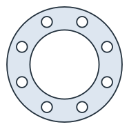
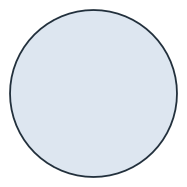
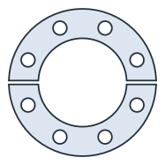
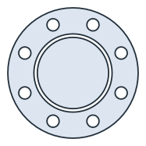
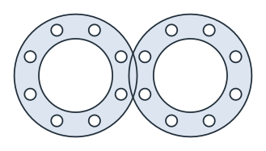
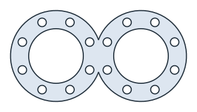

Faces, shapes and compounds
A face is one connected region, bounded by an outer loop and its holes. A shape holds faces that do not overlap, and wires, all cut against each other. It is what Boolean operations and gluing return, and every face in it keeps its own name and properties. A compound is a simple collection of any objects. Nothing in it is cut or merged, and it is exported as it is.
[1]:
import math
import planex as px
A face: outline and holes
The example is a flange gasket with an outer diameter of 150, a bore of 90 and eight bolt holes of 14 on a pitch circle of 120 (Figure 1a). outer and inner return its loops, and the inner loops are the bore and the eight bolt holes. The blank it is cut from is the outline alone (Figure 1b), and the cutting length is the length of all loops.
[3]:
outer, bore, pitch, hole = 150.0, 90.0, 120.0, 14.0
sketch = px.QuickSketch().Circle(outer / 2, name="outline").Circle(bore / 2, name="bore")
for k in range(8):
a = math.radians(45 * k + 22.5)
sketch.Circle(pitch / 2 * math.cos(a), pitch / 2 * math.sin(a), hole / 2, name="bolt hole")
gasket = sketch.Face()
gasket.name = "gasket"
blank = px.Face([gasket.outer])

(a) The gasket

(b) The blank: the outline alone
[5]:
cutting = gasket.outer.mass + sum(loop.mass for loop in gasket.inner)
print(len(gasket.inner), "holes")
print("blank", blank.mass, "exact", math.pi * outer**2 / 4)
print("scrap", blank.mass - gasket.mass, "exact", math.pi / 4 * (bore**2 + 8 * hole**2))
print("cutting length", cutting, "exact", math.pi * (outer + bore + 8 * hole))
9 holes
blank 17671.458676442588 exact 17671.458676442588
scrap 7593.22944372653 exact 7593.22944372653
cutting length 1105.840614063607 exact 1105.840614063607
A shape: the result of Boolean operations
Boolean operations always return a shape, even when the result is a single face. The example is the gasket split with a 4 mm kerf, so that it can be fitted around a shaft. The result has two faces, which faces lists. Face() returns the single face of a shape, so here it raises an error. Both halves keep the gasket’s name.
[6]:
kerf = 4.0
cutter = px.QuickSketch((-80, -kerf / 2)).Rectangle(160, kerf).Face()
split = gasket - cutter
print(type(split).__name__, len(split.faces), [f.name for f in split.faces])
try:
split.Face()
except ValueError as e:
print(e)
Shape 2 ['gasket', 'gasket']
Face(): the shape has 2 faces and 0 wires; .faces gives the faces, .wires the wires

Each half has half the area of the gasket minus the kerf. The kerf crosses the ring as a band between the bore and the outline:
[8]:
def band(r):
h = kerf / 2
return 2 * (h * math.sqrt(r**2 - h**2) + r**2 * math.asin(h / r))
ring_area = math.pi / 4 * (outer**2 - bore**2 - 8 * hole**2)
half = (ring_area - band(outer / 2) + band(bore / 2)) / 2
for f in split.faces:
print("half", f.mass, "exact", half)
half 4919.090898877184 exact 4919.090898877183
half 4919.090898877184 exact 4919.090898877183
Several regions from wires
px.Face(wires) and sketch.Face() require exactly one region. Nested contours from a cutting layout, such as the gasket and a disc cut from its bore for a smaller part, form two regions. px.Shape(wires) keeps both.
[9]:
disc = px.Circle((0, 0), bore / 2 - kerf)
contours = [*gasket.wires, disc]
try:
px.Face(contours)
except ValueError as e:
print(e)
layout = px.Shape(contours)
Face(wires): the edges bound 2 regions; Shape() keeps them all

[11]:
print(len(layout.faces), "faces, area", layout.mass, "exact", gasket.mass + math.pi * (bore / 2 - kerf) ** 2)
2 faces, area 15359.2464834005 exact 15359.2464834005
A compound is a collection
Nothing in a compound is cut, merged or checked, so its parts may overlap, lie on different planes, or mix faces and wires. The example is two gaskets placed 140 apart on a sheet, as a compound (Figure 4a). Uniting the compound (Figure 4b) shows that the gaskets overlap by the lens of two circles.
[12]:
distance = 140.0
sheet = px.Compound([gasket, gasket.Translated((distance, 0))])
united = px.Unify(sheet)

(a) The compound: two gaskets

(b) United
[14]:
r = outer / 2
lens = 2 * r**2 * math.acos(distance / (2 * r)) - distance / 2 * math.sqrt(4 * r**2 - distance**2)
print("overlap", 2 * gasket.mass - united.mass, "lens", lens)
overlap 361.4748662815182 lens 361.47486628151455
Side by side
Face |
Shape |
Compound |
|
|---|---|---|---|
Made by |
|
Boolean operations, |
|
Holds |
One region with holes |
Faces that do not overlap, and wires |
Any objects, also on different planes |
Boolean operations |
Yes |
Yes |
Only |
Parts |
|
|
Iteration, indexing, |
Split returns a list of shapes, one per piece. Offset changes a face in place, or returns a shape with inplace=False. See Faces and wires for gluing wires, and netgen and NGSolve for meshing glued faces.